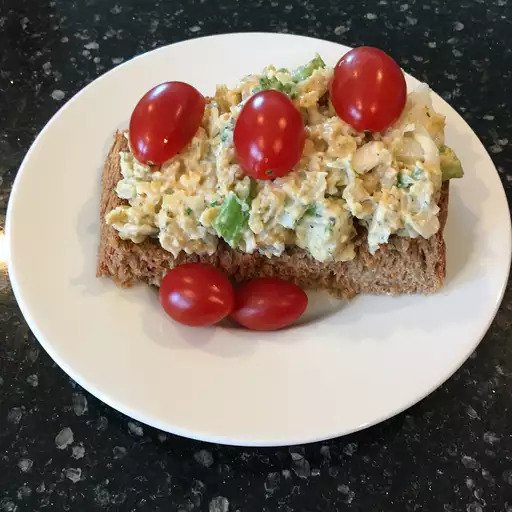

Chickpea Spread

Description:
This is a delicious sandwich filling. Similar to tuna or chicken salad,
this healthy alternative is a must go-to for a quick and satisfying lunch.
You can easily tweak this recipe to appease your taste buds!
Ingredients:
- 1 tin chickpeas, rinsed
- 1 stalk celery
- 1/2 small onion
- 2 medium-sized gherkins
- 1/4 cup dried cranberries
- 1/4 cup walnut pieces
- 3 tablespoons aioli or mayo
- 1 tablespoon mustard
- salt and pepper (a pinch of each, to taste)
Steps:
- Blend chickpeas, walnuts, and cranberries to desired consistency
- Dice onion, gherkins and celery
- Add chickpea mixture, diced veggies, sauces and seasoning into a mixing bowl
- Mix everything together and add extra ingredients, to taste
- Serve on fresh bread or toast. Yum!